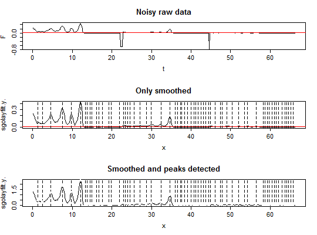

adpcr.noise_cut quantile would be considered noise in the further analysis.TRUE, Savitzky-Golay smoothing filter
is used.TRUE, data is normalised.The second element contains smoothed data.
Detect, separate and count positive and negative peaks, as well as peak-like noise. Additionally, function calculates area of the peaks.
The localization of peaks is determined by the
findpeaks function. The area under the peak is
calculated by integration of approximating spline.
Savitzky, A., Golay, M.J.E., 1964. Smoothing and Differentiation of Data by Simplified Least Squares Procedures. Anal. Chem. 36, 1627-1639.
data(many_peaks) par(mfrow = c(3,1)) plot(many_peaks, type = "l", main = "Noisy raw data") abline(h = 0.01, col = "red") tmp.out <- test_peaks(many_peaks[, 1], many_peaks[, 2], threshold = 0.01, noise_cut = 0.1, savgol = TRUE) plot(tmp.out[["data"]], type = "l", main = "Only smoothed") abline(h = 0.01, col = "red") abline(v = many_peaks[tmp.out[["peaks"]][, 3], 1], lty = "dashed") tmp.out <- test_peaks(many_peaks[, 1], many_peaks[, 2], threshold = 0.01, noise_cut = 0.1, savgol = TRUE, norm = TRUE) plot(tmp.out[["data"]], type = "l", main = "Smoothed and peaks detected")abline(v = many_peaks[tmp.out[["peaks"]][, 3], 1], lty = "dashed")for(i in 1:nrow(tmp.out$peaks)) { if(tmp.out$peaks[i, 2] == 1) {col = 1} if(tmp.out$peaks[i, 2] == 2) {col = 2} if(tmp.out$peaks[i, 2] == 3) {col = 3} points(tmp.out$peaks[i, 7], tmp.out$peaks[i, 6], col = col, pch = 19) }
positive <- sum(tmp.out$peaks[, 2] == 3) negative <- sum(tmp.out$peaks[, 2] == 2) total <- positive + negative